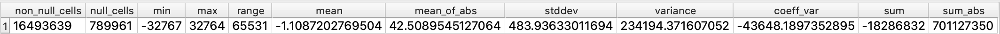
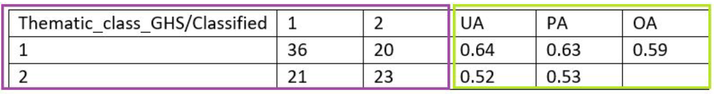
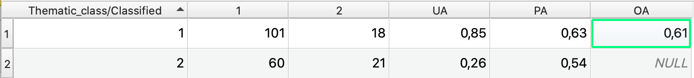
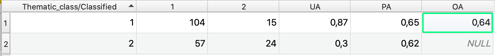

About the project
During the life a person is not only a number, everyone is important and can make the difference .
World population maps provide global information, evidence-based analytics, and knowledge on human presence on the planet.
The ultimate goal of these maps is to ensure that every person is mapped and counted within critical operations such as policy making and disasters response. Due to the importance associated with world population maps, the assessment of accuracy and reliability of these datasets is key to inform any users on benefit and limitations deriving from their usage.
Technologies
For developing the project, I used mainly the software QGIS and its tools for process the data.
For the Web part, I used GeoServer to publish the layers that I need and SublimeTextEditor to write the code of the pages of the site
Data
The project regards all of the World, but due to the dimension of work, the Earth was subdivided into Twelve sub-area each composed from about 30 tiles, which extensions corresponds to GHS-POP map tiles. The data that I have taken into account for the project are related to the sub-area of "group12" of tiles. From this area, I clipped a subgroup of tiles that are contiguos and are mainly on the Central Africa part. This subgroup is called in the project as "Subgroup12" and it is composed by twelve tiles. Each step of the project, the problems and the related outputs expected are explained in the homepage of this site, under the "Steps" section.
File
In this section I want to publish the statistics files obtained during the work.
The first image is related to the statistics of the difference map between GHS-POP and WorldPop after the Step 2. The difference map should represent the differences between the two maps.

The other images represent the error matrix of GHS-POP and the error matrix of WorldPop. Thanks to a Python script I obtain an output in a csv file. This output is composed by the error matrix and accuracy indexes. As written in the slides of lab project the example of the output is:

Accuracy indexes are:
The two images below represents the output that I have obtained:
Error matrix GHS-POP

Error matrix WorldPop

To explain the other data visualize in the two tables I use the notation of "(x:y), where "x" indicates the row and "y" indicates the column
The diagonal elements show the count of correctly classified pixels, the off-diagonal elements show incorrectly classified pixels.